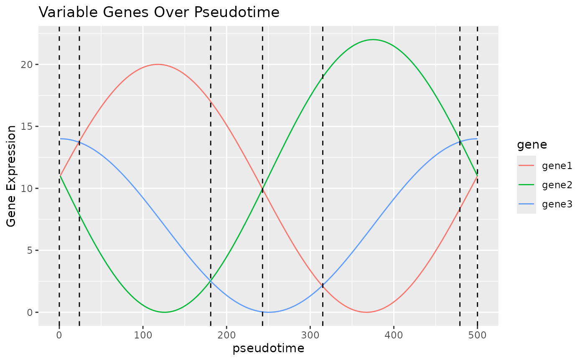

How Blase Works
How-Blase-Works.RmdPrinciple
We believe that in many trajectories that cells undergo, there will be a curve that shows the expression of some key genes. In the plot below, we can see that by looking at these three “genes” which have 2 peaks each over “pseudotime”, we can identify 6 unique states, which, as long as the genes correspond to some aspect of the trajectory, can be used to infer which stage of the trajectory a cell is currently in. This is of course a constructed example and unlikely to be exactly repeated in real life, but hopefully demonstrates the principle BLASE works on.
# Adapted from https://codepal.ai/code-generator/query/n4dEA6I9/plot-sine-wave-ggplot2-r
x <- seq(0, 2*pi, length.out = 500)
gene1_expr <- 10*(sin(x+0.1) + 1)
gene2_expr <- 11*(sin(x-pi) + 1)
gene3_expr <- 7*(sin(x+pi/2) + 1)
genes <- data.frame(gene1 = gene1_expr, gene2=gene2_expr, gene3=gene3_expr)
genes_melt = melt(t(genes), varnames = c("gene", "x"))
genes_melt$x = as.numeric(genes_melt$x)
# Create the plot using ggplot2
ggplot(genes_melt, aes=aes()) +
geom_line(aes(x=x, y=value, color=gene)) +
geom_vline(xintercept=24, linetype='dashed') +
geom_vline(xintercept=181, linetype='dashed') +
geom_vline(xintercept=243, linetype='dashed') +
geom_vline(xintercept=315, linetype='dashed') +
geom_vline(xintercept=479, linetype='dashed') +
geom_vline(xintercept=500, linetype='dashed') +
labs(x = "pseudotime", y = "Gene Expression", title = "Variable Genes Over Pseudotime")
Generating Icon
# Adapted from https://nelson-gon.github.io/12/06/2020/hex-sticker-creation-r/
library(fontawesome)
library(magick)
library(dplyr)
library(hexSticker)
library(devtools)
logo_color = "orange"
fill_color = "red"
border_color= "red"
svg = fa(name = "fire", fill = logo_color)
img = image_read_svg(svg)
img %>%
image_convert("png") %>%
image_fill(color=fill_color, point="+50") -> res
final_res<-sticker(res, package="BLASE", p_size=28,
p_y = 1,
s_x=1, s_y=1, s_width=1.2,
s_height = 14,
filename="blase_icon.png",
h_fill=fill_color,
h_color = border_color)
plot(final_res)
usethis::use_logo('blase_icon.png')